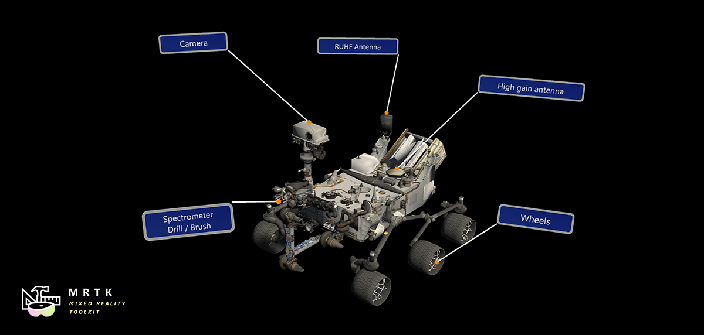

Tooltip 提示

Tooltips 通常用于在更仔细地检查对象时传达提示或额外的信息。Tooltips 可用于在物理环境中注释对象。
如何使用tooltip
Tooltips 可以直接添加到层次结构中，并以对象为目标。
要使用这个方法，只需添加一个游戏对象和一个tooltip 预制体到场景层次结构。在预置的inspector面板中，展开Tool Tip (脚本)。选择提示状态并配置Tooltip 。在文本字段中为tool tip输入相应的文本。展开ToolTipConnector(脚本)并将用于拥有tool tip的对象从层次结构中拖放到标有Target的字段中。这将tool tip附加到对象上。
这种用法假设tooltip 总是通过脚本显示或通过改变tooltip组件的tooltip状态属性显示/隐藏。
动态生成 tooltips
Tooltips 可以在运行时动态添加到对象中，也可以预先设置为在点击或焦点时显示和隐藏。简单地添加ToolTipSpawner 脚本到任何游戏对象。可以在脚本检查器中设置出现和消失的延迟以及生命周期，这样Tooltips 将在设置的持续时间之后消失。Tooltips 也有样式属性，比如衍生脚本中的背景视觉效果。默认情况下，Tooltips 将与衍生脚本锚定到对象。这可以通过给锚字段分配一个游戏对象来改变。
示例场景
在 示例场景文件, 中，您将能够找到各种各样的Tooltips 示例。